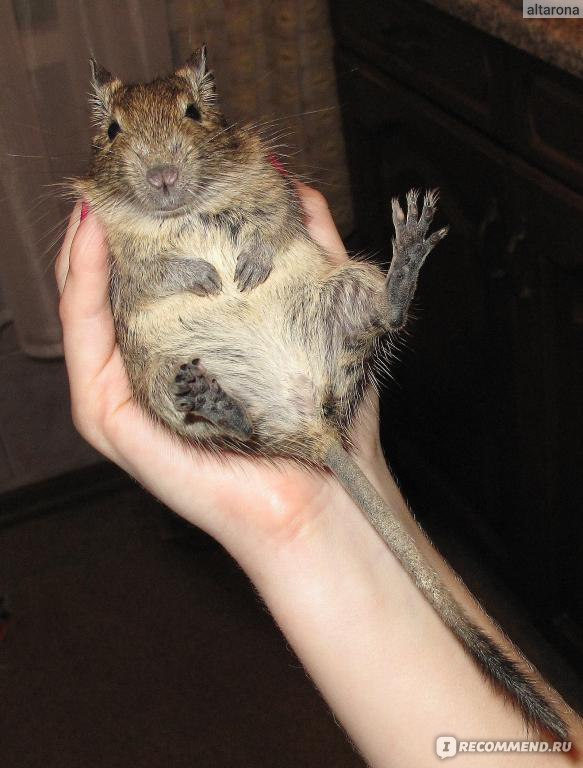

Де́гу, или кустарниковая белка (лат. Octodon degus) — южноамериканский грызун, распространённый на территории Боливии, Перу, Чили и Аргентины, предпочитающий каменистые биотопы, поросшие кустарником.
Наиболее активны они днём, но пасутся в основном в утреннее и вечернее время, летнюю жару избегают, так как прямой солнечный свет может вызвать у них тепловой удар.
Питаются травой, листьями кустарников, корой деревьев, семенами и корнями. Корм запасают в норах или закапывают его в землю. В зимнее время года питаются сухими листьями и сеном.
